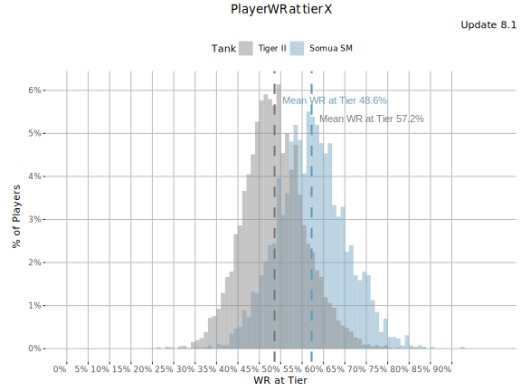
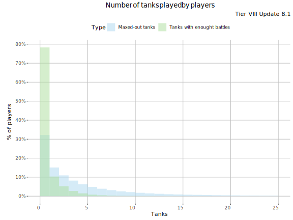
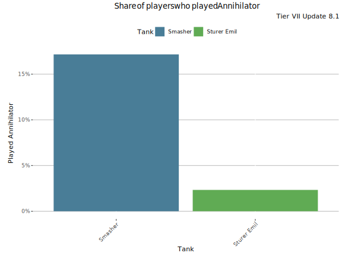
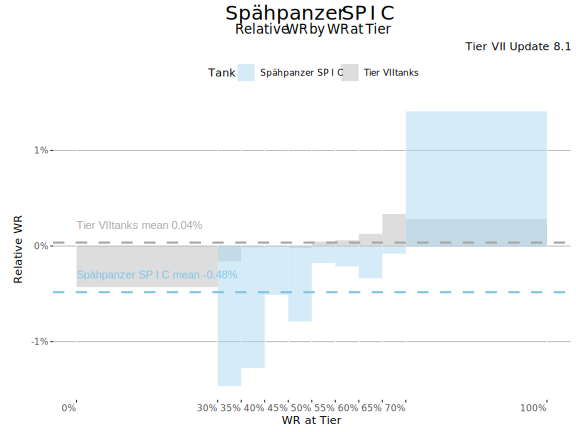
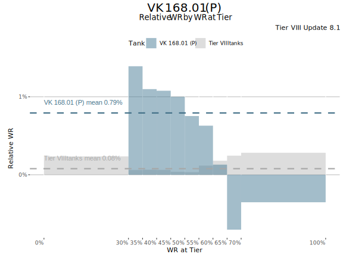

Measuring tank performance, part II
Measuring and comparing tanks’ performance was my key motivation behind the decision to develop the BlitzAnalysiz[] site. In a Measuring tank performance, part I I showed how tanks’ player bases differ from each other and why thus Average WR is a poor measure for comparing tanks’ performance. Have a look at the differences among the Tiger II and Somua SM players' WR at tier VIII. There is over 8% difference between the tanks' players average WR at tier VIII. That is huge difference and therefore it’s clear the average WR of Somua SM is far higher than that of Tiger II.

But does that tell the Somua SM is a better thank than Tiger II? You can’t tell based on average WR. You need to look the tank’s Relative WR to compare the tanks' performance, not just the tanks' players' performance.
Relative WR has its issues
But while Relative WR is a very good and (semi)understandable measure, but it has few issues in practice.
Shortage of data
To keep the stats relevant, the analysis should be run for a reasonably short period (e.g. for each update), but only small share of players play enough battles in maxed-out tanks during each update. Most of the time players are grinding new tanks. The histogram of tier VIII players shows how 33% of players do not play a single game in a maxed out tank (or a premium tank) and how almost 80% of players do not play enough battles (20) in a maxed-out tank during an update to get included into Relative WR calculations. In other words, only 20% of the players get included into Relative WR calculations (i.e. have enough battles in at least one maxed-out tank and have enough battles at the same tier in maxed out-tanks). This really is not an issue for more popular tanks, but it impacts on the accuracy of Relative WR for less-played tanks.

Different comparison points
Since players play enough battles with only very few maxed-out tanks during an update, the comparison points for different players is not the same. One could think that with enough data the differences will level, but not. For example just 2.3% of Sturer Emil players played also Annihilator enough for their Annihilator games to count into Relative WR calculations. For Smasher players the percentage was 17%.

It seems players who play an OP tank (that often premiums) are more likely to play also other OP tanks. This is distorting Relative WR as a measure since the comparison point for those players is already elevated. And I don’t blame the players - it takes certain attitude to play underdog tanks for fun.
Player base composition
Different tanks are played by different player populations. While the Relative WR is more resistant to the player base skill differences than average WR, it is not immune to those. The differences become meaningful with tanks with specially high skill-floor or low skill-ceiling. These tanks perform relatively worse (or better) with low-skilled (and vice versa for the highly-skilled) players. Light tanks are generally tanks with high skill-floor. It takes considerable skill to even carry one’s own weight in light tanks. As you can see from the Relative WR by WR at the tier plot below, less-skilled players underperform in Spähpanzer SP I C, but very good players overperform their personal tier VII average.

A contrary effect can be seen in tanks with a low skill-ceiling. These are tanks which perform relatively worse in the hands of very good players. These are often well-armored, but slow tanks. The armor keeps poor players alive, but the poor mobility hinders good players from seizing opportunities they could with other more mobile tanks. VK 168.01 (P) is one example of tanks with low skill-ceiling. It does not mean that good players have lower WR in it than bad players, but it means good players have (on average) lower WR in the VK 168.01 (P) than in their other same tier tanks.

It is easy to see how the player population can impact significantly to the tanks (average) Relative WR if tank’s Relative WR varies greatly by player skill-level. If, for example, VK 168.01 (P) was played mostly by below-average players, its (average) Relative WR would be high, but if it were mostly played by very good players, its (average) Relative WR would be low and actually negative (i.e. below average).
Conclusion
Despite the issues discussed above Relative WR is a good tank performance measure. It should be noted that the last issue - the impact of player population - is a sampling issue and not an issue of the Relative WR per se. Player population impacts on every performance measure.
The distortions caused by sampling errors are common in all statistical studies and surveys. The common way to counter sampling issues and in case of tank stats the differences in player base composition is the use of stratified sampling. The issues of availability of data and different comparison points are more fundamental and directly related to the Relative WR methodology.
But how to tackle the first two issues? Well, I would have not written this post if I didn’t have something in mind. Stay tuned ;-)
-

This work is licensed under a Creative Commons Attribution-ShareAlike 4.0 International License.
-

-

BlitzAnalysiz[] is a player-created website for World of Tanks: Blitz and developed in accordance with WG DPP. This site is not an official Wargaming or World of Tanks: Blitz website. World of Tanks Blitz and Wargaming are trademarks of Wargaming.net Limited. Game content and materials copyright © Wargaming.net. All rights reserved.